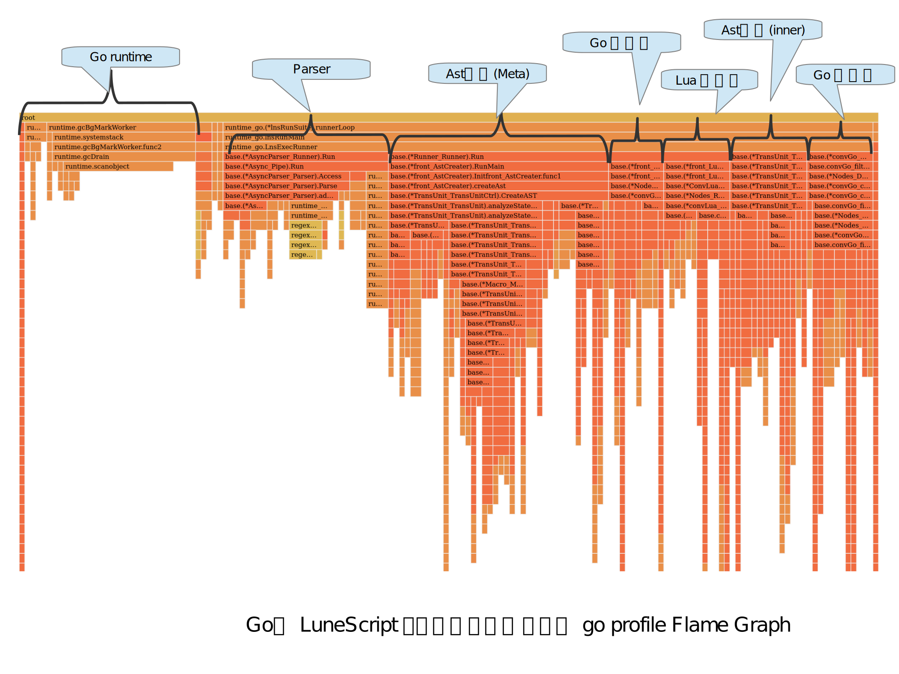

LuneScript のトランスコンパイル高速化 (トランスコンパイル時間を 2273 パーセント改善)
先月から続いて、LuneScript のトランスコンパイル高速化作業をしています。
セルフホストのトランスコンパイル時間
今回の時間短縮は以下の通りです。
| lua VM 版 | go ビルド版 | lua/go | |
|---|---|---|---|
| 改善前 5/6 (6e5661a9) | 25.69 sec | 5.84 sec | 440% |
| 改善後 5/25 (364095ef) | 17.42 sec | 2.22 sec | 785% |
| 改善後2 6/7(52df422b) | 17.57 sec | 1.82 sec | 965% |
| 改善後3 6/29(8898c475) | 18.07 sec | 1.13 sec | 1599% |
| 改善率(改善前/改善後3) | 142% | 517% |
この表は、セルフホスティングしているソースのトランスコンパイル時間の計測結果を 示しています。 lua VM で動作させた lnsc と、go でビルドした lnsc で計測しています。
改善前の 6e5661a9 は、2021/5/6 のバージョンです。 今回の 改善後3 の 8898c475 は、2021/6/29 のバージョンです。
この表の通り、 改善前の Lua と、 今回の改善後3 go のトランスコンパイル時間を比べると (/ 25.69 1.13) 22.734513274336287 == 2273% 改善しています。
あと少しで 1 秒を切れるところまで改善しました。
なおこの時間は、 lns コマンドの処理時間を time コマンドで計測した結果です。 一方で、トランスコンパイラ内部で計測すると、 その処理時間は 約 0.94 秒 となっていて 1 秒を切っています。 つまり、トランスコンパイラの起動・終了処理に 約 0.2 秒程度かかっているようです。
flamegraph
次の図は、セルフホストのトランスコンパイル実行時の flamegraph です。

これを見ると、左端の Go runtime にかなり多くの時間がかかっていることが分かります。 ただ、この時間がパフォーマンスにどの程度影響しているかは分かっていません。
この Go のランタイム処理は、基本的には GC の制御だと思います。
GC 制御にこれだけ時間がかかっているということは、 それだけオブジェクトをヒープに生成しているということでもあります。 つまり、ヒープへのオブジェクト生成を抑制できれば、 GC 制御も軽くなることが考えられます。
現状の LuneScript は、 全てのクラスのオブジェクトをポインタで管理 します。
以下の記事によると、 ポインタで管理するオブジェクトは、 ほとんど全てのケースでヒープに生成される ということです。
<https://hnakamur.github.io/blog/2018/01/30/go-heap-allocations/>
つまり、 LuneScript のクラスオブジェクトは、 ほとんど全てがヒープに生成される ことになります。
これでは Go のランタイム処理が重くなるのも当然 でしょう。
ならば、出来るだけポインタを使用せずにクラスオブジェクトを管理できれば、 ヒープのオブジェクト数が減り、Go のランタイム処理は軽くなるはずです。
ただしここで疑問なのは、 GC 処理が重いのは間違いないとしても、 スタック割り当てにした時に、本当に軽くなるのか？ というところ。
また、LuneScript のデータ構造で、 オブジェクトをスタック割り当てにすることが可能かどうか？ というところです。
スタック割り当てなら早い？
スタック割り当てにして本当に高速化できるのかを確認するため、 簡単な検証用コードを作成しました。
このコードは、 sub1 〜 sub4 をそれぞれ一定回数実行し、 それぞれの実行時間を出力します。
コメントの // escape は、
$ go build -gcflags -m コマンドで escapes to heap と出力された箇所を示します。
package main
import "fmt"
import "time"
import "runtime"
type Test struct {
val int
}
var list1 = make( [] Test, 1 )
var list2 = make( [] interface{}, 1 )
func sub1( test Test ) {
list1[ 0 ] = test
}
func sub2( test *Test ) {
list2[ 0 ] = test
}
func sub3( test Test ) {
list2[ 0 ] = test // escape
}
func sub4( test *Test ) {
list1[ 0 ] = *test
}
func profile( name string, callback func() ) {
runtime.GC()
prev := time.Now()
callback()
fmt.Printf( "%s: time = %v\n", name, time.Now().Sub( prev ).Milliseconds() )
}
func main() {
maxCount := 100000 * 50000
profile( "sub1", func() {
test := Test{}
for count := 0; count < maxCount; count++ {
sub1( test )
}
})
profile( "sub2", func() {
test := &Test{} // escape
for count := 0; count < maxCount; count++ {
sub2( test )
}
})
profile( "sub3", func() {
test := Test{}
for count := 0; count < maxCount; count++ {
sub3( test ) // escape
}
})
profile( "sub4", func() {
test := &Test{}
for count := 0; count < maxCount; count++ {
sub4( test )
}
})
}この処理は、 Test 構造体のオブジェクトを生成し、 スライスの list1 あるいは list2 に格納します。 オブジェクトの生成から格納するまでの間、 値渡しで処理するか、ポインタ渡しで処理するかによって、 実行時間にどのような違いが出るかを計測します。
各関数はそれぞれ以下を実行しています。
-
sub1
- 値渡しのまま処理する。
-
sub2
- ポインタ渡しのまま処理し、interface{} に変換する。
-
sub3
- 値渡しのデータを、 interface{} に変換して処理する。
-
sub4
- ポインタが示すアドレスから、値をコピーして処理する。
上記プログラムの実行結果は次の通りです。
sub1: time = 1765
sub2: time = 3724
sub3: time = 11300
sub4: time = 3713これを見ると、以下が分かります。
- 値渡しをしている sub1 が一番高速に動作している。
- ポインタ渡しをしている sub2 は、sub1 の倍以上の時間かかっている。
- 値渡しのデータを interface{} に変換している sub3 は、 最初からポインタでデータを保持している sub2 の 3 倍時間がかかっている。
- ポインタ渡しのデータから値をコピーするだけなら escape されない。 しかし、コピーに時間がかかってしまい、 最初から最後までポインタで持っている sub2 と変わらない。
これにより、 値渡しがポインタ渡しよりも高速に動作する ことが確認できました。
一方で、 sub3 のケースのように 値をスタック割り当てで処理する場合でも、 途中で interface{} に変換すると逆に遅くなる ケースがある。 ということも分かりました。
特に、 sub1 と sub2 の比率と、 sub2 と sub3 の比率を比べると、明らかに後者の方が大きいです。
つまり、 中途半端なスタック割り当ては逆効果になる ということです。 sub1 のつもりでスタック割り当て対応したら、結果は sub3 になってしまう。 そんなことが起きる可能性があります。
これを考えると、 下手にスタック割り当てすると今よりさらに遅くなる 可能性があるということで、 スタック割り当て対応は慎重に 行なわなければなりません。
スタック割り当てを実現する場合
LuneScript でスタック割り当てを実現する場合、以下を検討する必要があります。
- lua にトランスコンパイルした時の動作の定義
- スタック割り当てと、ヒープ割り当ての syntax 上の表現
lua にトランスコンパイルした時の動作の定義
lua は、ポインタという概念がありません。 というか、全てのクラスオブジェクト(table)は、ポインタで管理されるため、 go のようにヒープ割り当てされているオブジェクトを、 スタック割り当てにすれば速くなる、ということはありません。
特に、スタック型の引数を持つ関数の動作を lua で再現するには、 ヒープ割り当てのオブジェクトを clone することになり、 ヒープ割り当てのオブジェクトが clone した分増え、 パフォーマンスが余計に劣化するだけです。
このパフォーマンス劣化を防ぐには、 go と lua とで出力を変更する必要があります。 具体的には、go に変換する場合はスタック割り当てオブジェクト同士のコピーにし、 lua に変換する場合はヒープオブジェクトのポインタ渡しにします。
しかし、これではそのオブジェクトが mutable であった時に、 go と lua とで論理が異なることになります。
逆に言えば、 オブジェクトが immutable であれば、 go と lua とで同じ論理になることになります。
だとすれば、go でスタック割り当てオブジェクトを使う条件として、 完全 immutable オブジェクト を前提にすることで、 go と lua とで同じ論理を保ちつつ、 go を高速化できる可能性があります。
ここでいう 「完全 immutable オブジェクト」 とは、 「ある時点 T 以降で変更されることがないオブジェクトの T 以降」 を指します。
たとえば以下のような場合、 test は 「完全 immutable オブジェクト」 ではありません。
class Test {
let mut val:int {pub,pub};
}
fn foo( test:&Test ) {
print( test.$val );
}
fn bar( test:Test ) {
test.set_val( 10 );
}
let mut test = new Test(1);
foo( test ); // 1
bar( test );
foo( test ); // 10上記のコードで、 foo() の中では test は immutable ですが、 完全 immutable オブジェクト ではありません。
なぜなら、 bar() によって、 test のメンバが書き換えられるためです。
このように、ある範囲では immutable に見えても、 全体で見ると mutable なオブジェクトは 完全 immutable オブジェクト ではありません。
一方で、例えば以下のようなケースでは、 test は 完全 immutable オブジェクト です。
class Test {
let mut val:int {pub,pub};
}
fn foo( test:&Test ) {
print( test.$val );
}
fn bar( test:Test ) {
test.set_val( 10 );
}
let test;
{
let mut work = new Test(1);
foo( work );
bar( work );
test = work;
}
foo( test );なぜなら test の型は &Test であり、 なおかつ test の代入元の work は、既にスコープ外になっていて、 mutable アクセス可能な変数が存在しないためです。
ただ、このようなケースを 完全 immutable オブジェクト として扱うのは困難です。
なぜなら、 mutable 型のシンボルの有無を保証しなければならないためです。
もしも、これを実現するのなら、 Rust のようなアクセス権制御を導入する必要があるでしょう。
Rust のようなアクセス権制御導入は最終手段にしたいので、 ここでは 完全 immutable オブジェクト として扱うために、 そのオブジェクトのクラスに次の制限を設定します。
- どのクラスからも継承されていない
- 全てのメンバが immutable。 あるいは、オブジェクトを生成する時点で immutable として生成する。
上記制限を満す時に限り、そのクラスのオブジェクトを 完全 immutable オブジェクト とします。
スタック割り当てと、ヒープ割り当ての syntax 上の表現
上記検証コードで確認した通り、 スタック割り当てにしても処理が高速化させるとは限りません。
つまり、ヒープ割り当てからスタック割り当てに時間をかけて切り替えて、 実際にパフォーマンスを計測してみたら遅くなっていた、なんていう可能性があります。
よって、あるオブジェクトをヒープ割り当てからスタック割り当て切り替える、 そしてその逆を簡単に切り替えられるようにする必要があります。
このように対応することで、高速化の検討作業を効率化できます。
これを実現するには以下が必要です。
- スタック割り当てと、ヒープ割り当ての syntax 上の表現の違いを、 クラス宣言の表現に極力おさめる。
- クラス宣言の外の syntax 表現の違いが出る場合は、 機械的な置換が出来る表現にする。
現状の syntax 候補としては、 __absImmut インタフェースを implement したクラスを、 完全 immutable オブジェクトとして扱います。
なお、__absImmut インタフェースを implement したクラスは、以下を制限します。
- immutable なメンバーしか持てない。
- 継承できない。
まずは __absImmut インタフェースの対応をすすめ、 それで効果が出るかどうかを確認する予定です。